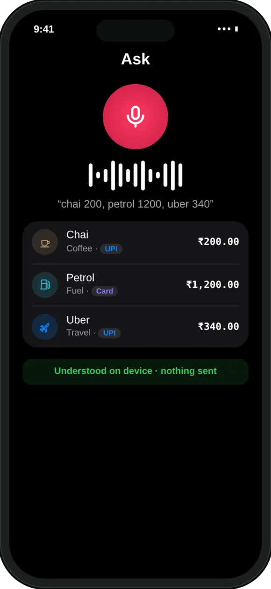
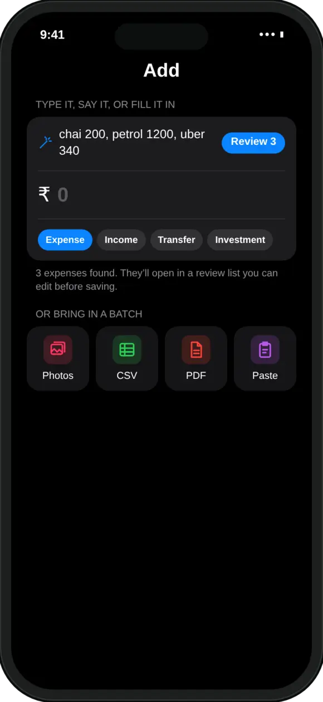
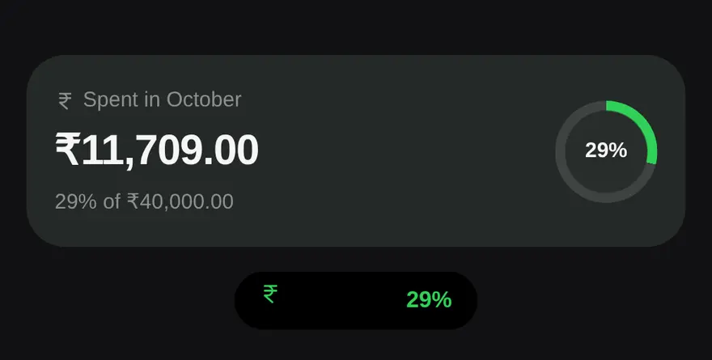
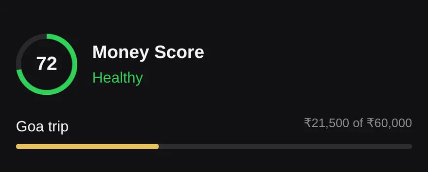
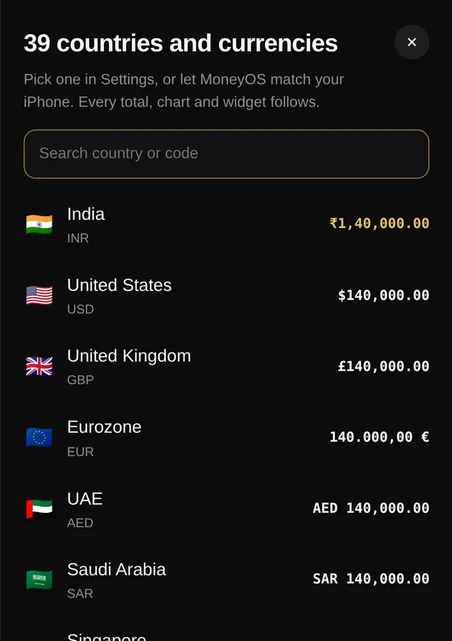

What is MoneyOS?
MoneyOS is a private expense and budget tracker for iPhone and iPad. It records what you spend, earn, invest and owe, shows you how the month is going, and warns you before you overspend. Everything is stored on your device. There is no sign-up, no backend, and nothing to leak.
We built it because tracking money should feel like keeping a private notebook, not feeding a data pipeline. The app was designed in India first, for people who pay by UPI many times a day, and it now works in 39 countries and currencies.
How do I track UPI payments without giving an app my bank login?
Screenshot your payment history and let MoneyOS read it. Open the history screen in Google Pay, PhonePe, Paytm or your bank app, take a few screenshots, and pick up to 10 of them in MoneyOS. Every row on every screenshot becomes a transaction in a review list. Likely repeats are flagged, and nothing saves until you tap Import.
The reading happens on your iPhone. Your screenshots are not uploaded anywhere, and MoneyOS never needs your bank credentials or account aggregator consent to work.

What are the ways to add an expense?
There are five, and you can use whichever is fastest at the moment.



Whichever route you choose, every import lands in a review list first. You untick what you don’t want, fix what’s wrong, and only then save.
Is MoneyOS really private?
Yes. MoneyOS does not collect any data, because it has nowhere to send it. There is no MoneyOS server, and the app has no analytics, no crash reporting service, no advertising SDK and no third-party tracking. Our App Privacy label on the App Store says Data Not Collected.
Stays on your device
Transactions, cards, income, goals, budgets and imported documents live only in MoneyOS’s storage on your iPhone or iPad.
Optional iCloud sync
Off by default. Switch it on and data syncs through your own private iCloud account, which we cannot see.
Face ID lock
Keep the app locked even when your phone is unlocked.
Backups that outlive the app
Encrypted daily backups, copied to a folder you pick in Files or iCloud Drive.
Your data, out any time
Export everything to CSV or JSON whenever you want it.
No ads, no trackers
The app has no analytics, no crash reporting and no advertising SDK. Read the privacy policy.
How is MoneyOS different from a typical money app?
| Typical money app | MoneyOS | |
|---|---|---|
| Account or login | Required | Not needed |
| Bank credentials | Often requested | Never |
| Where your data lives | Company servers | Your iPhone or iPad |
| AI questions | Sent to a cloud model | Answered on device |
| Price | Subscription or ads | Free, no ads, no in-app purchases |
How can AI answer questions if nothing leaves my phone?
MoneyOS uses Apple Intelligence, which runs on your iPhone. Ask “Where did my money go this month?” or “How much did I spend on food?” and you get an answer in plain words. Apple’s on-device model does the talking and your ledger does the maths, so every number is real and nothing is uploaded.

Ask needs an iPhone that supports Apple Intelligence. On other iPhones, quick queries give the same answers.
How does MoneyOS help me stay on budget?
It shows you the month day by day and nudges you before you overspend.




Which countries and currencies does MoneyOS support?
39 countries and currencies, including India (INR), the United States (USD), the United Kingdom (GBP), the Eurozone (EUR), the UAE (AED), Singapore (SGD), Australia (AUD), Canada (CAD) and Japan (JPY).
Pick one in Settings or let MoneyOS match your iPhone, and every total, chart and widget follows. You can also type amounts with any symbol: $40, USD 12.50 and Rs.200 all work. See all 39 on our home page.

What’s new in MoneyOS 2.0?
- Your currency, everywhere. Pick any of 39 currencies and every total, chart, icon and widget follows. Keep your numbers and change only the symbol, or convert at your own rate.
- Limit alerts in the app, the moment an expense takes a limit past 80% or 100%.
- Backups that outlive the app, copied to a folder in Files or iCloud Drive.
- Widgets that match Home: SIPs and other investments no longer count as spending.
- Two devices, one currency: switch currency on one and the other offers to follow.
Frequently asked questions
Do I need an account to use MoneyOS?
No. MoneyOS has no sign-up, no login and no bank credentials, because there is no MoneyOS server to sign in to. Your data is stored on your iPhone or iPad.
Can MoneyOS read my bank SMS automatically?
No. iOS does not let any app read your SMS. Instead, you can paste a bank SMS into MoneyOS, or screenshot your payment history in Google Pay, PhonePe or Paytm and MoneyOS reads every row.
How do I track UPI payments in MoneyOS?
Take screenshots of your payment history in your UPI app, then pick up to 10 of them in MoneyOS. Every row becomes a transaction in a review list, likely repeats are flagged, and nothing saves until you confirm.
Is MoneyOS free?
Yes. The whole app is free, with no subscription, no ads and no in-app purchases.
Does MoneyOS work offline?
Yes. Logging, reading screenshots, understanding what you type or say, and answering questions with Apple Intelligence all happen on the device. iCloud sync is optional and off by default.
Does MoneyOS work on iPad?
Yes. MoneyOS is available for iPhone and iPad, and optional iCloud sync keeps your devices in step through your own private iCloud account.
How do I back up MoneyOS or move to a new phone?
MoneyOS keeps encrypted daily backups and can copy them to a folder you pick in Files or iCloud Drive, so you can restore after reinstalling. You can also export everything to CSV or JSON.